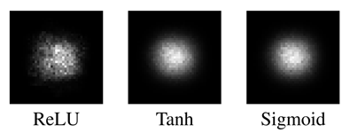
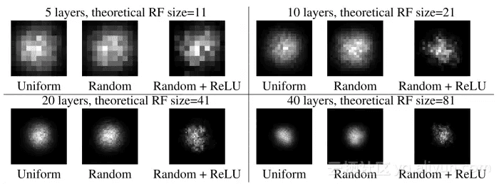
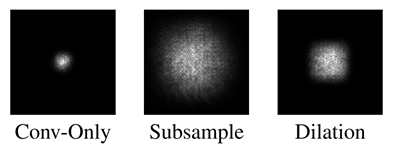
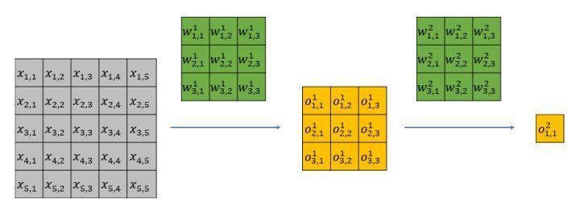

理论感受野
能够影响单个卷积输出值的输入区域。
比如1个3x3的卷积核，stride=1，输出的点是由3x3大小的感受野提供的。如果再跟上一个2x2的pooling层，那么pooling层输出的一个点是由4x4的感受野提供的。
解释，因为2x2的pooling层上的每个点是由3x3视野提供的，但是，卷积核的stride=1，所以，感受野上下增加1，为4x4。
计算公式
kernel_size=3,stride=1
初始感受野RF0=1，
feature_stride0=1，l表示层数。
其中feature_stride计算公式：feature_stridel=∏i=1l
第一次特征感受野：
RF1=RF0+(kernel_size1)∗feature_stride0=1+(3−1)∗1=3
第二层特征，感受野:
RF2=RF1+(kernel_size2)∗feature_stride1=3+(3−1)∗1=5
第三层特征，感受野:
RF3=RF2+(kernel_size3)∗feature_stride2=5+(3−1)∗1=7
如果有dilated conv的话，计算公式为:
RFl+1=RFl+(kernel_sizel+1−1)∗feature_stridel∗dilationl+1
有效感受野
由于理论感受野所有像素对卷积输出的贡献并不是完全相同，而仅仅是一小部分区域对输出值能够产生有效的影响，而这一小部分区域则为有效感受野。
论文Link：Understanding the Effective Receptive Field in Deep Convolutional Neural Networks



有效感受野存在的原因
两个kernel_size=3,stride=1的感受野为5，如下图所示：

从图中可以发现，x1,1只影响第一层feature map中的o1,11；而x3,3会影响第一层中的所有特征值。
第一层所有特征值都将会影响到第二层的特征值o1,12。
但是x1,1只能通过o1,11一个点来影响o1,12，很明显不如x3,3更具影响力，因为第一层中的每一个特征值都和x3,3有关。综上，输入中越靠感受野中间的元素对特征的贡献越大，边缘贡献最小。
Padding
-
Padding作用
①. 保留图片边界信息，Padding可以避免图片边缘只被卷积一次。
②. 对有差异图片补齐，使得输入一致。
③. 控制输出维度。
-
两种padding方式
① VALID如果发现剩下区域不够卷积，那么直接舍去。
② SAME会填充以保证边缘参与卷积。
那么Padding操作会让图片所有区域的有效感受野都相同吗。
不可以，还有初始化方法与激活函数影响。（待写如何影响）
如何扩大实际感受野
将全局池化提取图像的全局特征，与局部特征融合起来。（ParseNet）
但是不同层之间的特征的尺度是不同的，所以需要归一化操作。